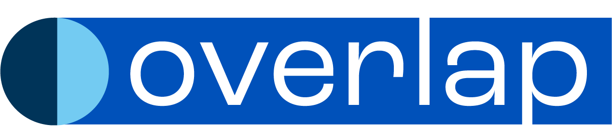

Research translation
Research with reach.
Somewhere, a teacher is searching for something your research could provide. Or maybe it's a parent. Or a school leader. It is a person making a consequential decision that impacts a child.
You want to meet them in that moment. So let's think it through together. Who is this person, how are they searching, and what policy or law applies here?
Where would you like to start?
A few minutes here makes everything that follows more useful. Mark up your title, your section headings, and your links before you continue, and you'll have already made some of the decisions the tool is about to ask you about.
The heading buttons in the toolbar are markup in the technical sense too: they tag your content in a way that screen readers, search engines, and WordPress all understand. Think of it the way you'd mark up a manuscript. Same instinct, different pen.
When you're ready, hit Continue. The formatting you do here travels with you through the rest of the review.
These three areas cover the terrain most academic training doesn't — who your content reaches, whether it's legally and ethically sound, and whether the right readers will find it.
Start wherever feels most urgent.
Someone out there needs something your research could provide. Picture that person as an individual, not a category. Imagine their work, their week, their worries, and their dreams.
Hold this person in mind as you answer the questions below.
What's happening when this becomes useful?
Start with the situation, not the finding. What's going on — and what would they type into a search bar?
What should they be able to do, decide, or try differently because of this?
What kind of thing should this be?
In a future version of this tool, your responses here will travel with you into the draft review, helping configure the feedback you receive on your title, your opening, and your structure. For now, this is a space to think.
When you're ready to review a draft, return to the home screen and choose Draft Review.
I've made an initial read of your content. It's blunt, imperfect, and deliberately sensitive. I'd rather flag something that turns out to be fine than miss something that isn't. Work through what's flagged, and explore the rest before you publish.
Each flag opens a guided conversation, with curated policy guidance available if you want to go deeper.
The guidance here is grounded in KU/JGCP-specific context, including the policies, IRB conditions, and communication norms that apply to your work specifically. This configuration will deepen over time.
A child is named and identified alongside her diagnosis. A parent is quoted extensively. Both raise consent scope questions before republication.
›This content names a child's autism diagnosis alongside her full name — a combination that can identify and stigmatize beyond what either detail does alone.
›This article includes an image. Republication on a new site changes the licensing picture, and the absence of copyright information doesn't mean it's free to use.
›No quoted text from published sources detected. Copyright questions aren't in play here as it stands, but they will be if you bring in material from other sources.
›This research is federally funded and originated in an IRB-governed context. The consent that covered the original research may not automatically cover public-facing republication.
›No accuracy or endorsement issues detected. The claims here appear appropriately qualified. That changes if this content is adapted into formats that present outcomes as typical or guaranteed.
›This card covers two related questions that both require a careful answer before this content is republished. Work through them in sequence — the second builds on the first.
This content names a child, describes her autism diagnosis, and includes outcome details about her development. Before this content is republished or adapted, there are a few things worth considering.
Content that identifies a minor alongside a disability diagnosis can trigger protections under two federal laws.
FERPA protects educational records of students. If this child's information originated in any educational or early intervention context, republishing it — even in a news story — may require documented consent that covers this specific use.
COPPA applies when content about children under 13 is published online. If this article is republished on a new site, the site operator takes on responsibility for that content.
Before we go further — do you know whether written consent was obtained from this family, and whether that consent specifically covers republication on a new website?
This content includes detailed personal quotes from a private individual — a parent describing her family's experience with a research program. The original article was produced by an institutional communications team and almost certainly went through an appropriate editorial and consent process for that publication.
But that's not the question worth asking here.
The more useful question is: does the consent obtained for the original publication extend to this new context? When content is republished on a different site, adapted into a new format, or shared with a different audience, the original consent may not automatically cover that new use.
This matters because Veronica Fernandez is a private individual, not a public figure. Private individuals have stronger legal protections around how their words and image are used — and those protections don't disappear because the content was already published somewhere else.
Do you know whether the original consent specifically covers republication on a new website or in a new context?
This area is under active development. Guidance on disability status, medical diagnoses, and protected characteristics in public-facing research content is coming in a future build.
I can't see images from pasted text — but if your content includes photos, illustrations, charts, or other visuals, licensing is one of the most commonly overlooked compliance questions in web publishing.
The most important thing to understand: the absence of copyright information on an image does not mean it is free to use. In the U.S., copyright attaches automatically at the moment of creation. No copyright notice is required. An image without visible attribution is not an unprotected one.
Does this content include images, photos, charts, or other visual media?
No quoted text from published sources was detected in this content, so copyright questions are unlikely to apply here as it stands.
If you adapt this content to include text quoted from journal articles, reports, or other published sources — even brief passages — copyright and fair use become relevant. The question isn't just whether you cite the source, but whether the extent and purpose of the quotation falls within fair use doctrine.
This card will become active guidance if and when you bring in quoted material from external sources.
This area is under active development. Guidance on IRB constraints, embargo obligations, and whether original consent covers public-facing republication is coming in a future build.
No overstated findings or FTC-relevant testimonial framing was detected in this content.
The quotes in this article are attributed to named individuals describing personal experience — not presented as universal endorsements or guaranteed outcomes. Effect sizes and claims appear appropriately qualified.
If you adapt this content into promotional formats — particularly anything that presents participant outcomes as typical results — FTC endorsement guidelines and accuracy standards become directly relevant.
Your reader is searching for something. They have a specific goal, a limited amount of time, and a search bar. They'll decide within seconds if they've found what they need. This section helps you meet them in that moment.
Select the areas you want to work through.
Based on your text
I'll show it to you the way a search engine sees it, and help you think through whether it's working.
I'll show you your first sentence the way a web reader sees it, and help you think through whether it's doing its job.
I'll show you your headings the way a scanning reader sees them, and help you think through whether they're communicating.
Beyond your text
I can't see your reader the way I can see your title or your headings. But I can ask you to picture them, and help you think through whether your content is written for that person.
You've thought about who this is for, how they'll find it, and whether they'll know where to go. That's most of what discoverability actually means.
Most readers scan before they commit. They arrive at your work mid-thought, looking for something specific. They may be using a screen reader, a phone, or a slow connection. They decide in seconds whether this page has what they need. The structural features that help them make that decision are the same features that help a screen reader navigate your content and a search engine understand what it's about.
Good writing for the web is accessible, and this section helps you examine your work through this lens. I can analyze some parts of your content directly. Others I can't see, but those parts still matter, and this is where you can check them.
Select the areas you want to work through.
Based on your text
Headings are how screen readers navigate and how search engines understand what your content is about. Without a clear hierarchy, both are guessing.
Links should describe where they go. "Click here" or "learn more" tell a reader nothing, and a screen reader even less.
Readability is an accessibility issue. Long sentences and dense paragraphs create real barriers for some readers and friction for everyone else.
Beyond your text
Just like readers who use screen readers, I can't see your images. For them, alt text is the entire experience of an image. Check it before you publish.
I can't watch or hear what you've embedded. For me, and for every reader who is deaf or hard of hearing, captions are the content. Check yours before you publish.
I can't see your tables. For me, and for screen reader users, a table without proper headers is nearly unnavigable. Check yours before you publish.
Every decision you made here was made on behalf of a reader you'll never meet. That's the work.